<mat-sidenav-container class="sidenav-container">
  <mat-sidenav
    #drawer
    class="sidenav"
    fixedInViewport
    [attr.role]="(isHandset$ | async) ? 'dialog' : 'navigation'"
    [mode]="(isHandset$ | async) ? 'over' : 'side'"
    [opened]="(isHandset$ | async) === false"
  >
    <mat-toolbar>Menu</mat-toolbar>
    <mat-list>
      @for (menuItem of menuItems; track menuItem) {
      <mat-list-item
        matRipple
        [routerLink]="menuItem.url"
        routerLinkActive="active"
      >
        <mat-icon matListItemIcon>{{ menuItem.iconName }}</mat-icon>
        <div matListItemTitle>{{ menuItem.text }}</div>
      </mat-list-item>
      }
    </mat-list>
  </mat-sidenav>
  <mat-sidenav-content>
    <mat-toolbar color="primary">
      @if (isHandset$ | async) {
      <button
        type="button"
        aria-label="Toggle sidenav"
        mat-icon-button
        (click)="drawer.toggle()"
      >
        <mat-icon aria-label="Side nav toggle icon">menu</mat-icon>
      </button>
      }
      <div class="e-appbar-spacer">
        
      </div>
      <span>PAST EXAMS HUB</span>
      <span class="example-spacer"></span>

      <button
        mat-icon-button
        class="example-icon favorite-icon"
        aria-label="Example icon-button with heart icon"
      >
        <mat-icon>favorite</mat-icon>
      </button>
      <button
        mat-icon-button
        class="example-icon"
        aria-label="Example icon-button with share icon"
      >
        <mat-icon>share</mat-icon>
      </button>
    </mat-toolbar>
    <router-outlet></router-outlet>
    <!-- Add Content Here -->
  </mat-sidenav-content>
</mat-sidenav-container>
